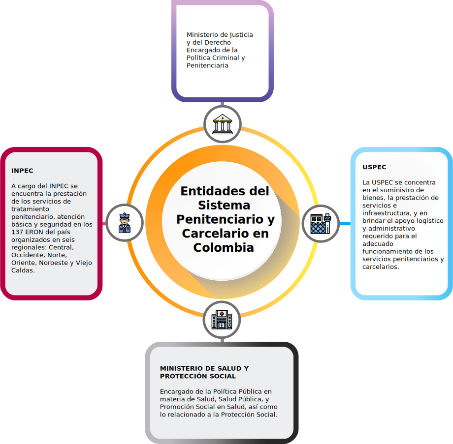

Su contenido es normativo, siendo una parte del ordenamiento jurídico. La existencia de una Ley Orgánica General Penitenciaria y sus normas reglamentarias de desarrollo, así lo constata.
Introducción
Damos inicio al primer recurso educativo, en el cual se desarrollan elementos conceptuales de la Prestación de los servicios de salud en los establecimientos de reclusión a cargo del INPEC
Este primer recurso se orienta a identificar los principales componentes del contexto institucional y normativo del Sistema Penitenciario y Carcelario. Tiene como objetivo el conocimiento del marco normativo, el modelo de atención, manuales técnicos administrativos (salud pública, prestación de servicios y calidad) y el compromiso que deben tener los profesionales en salud que laboren con las personas privadas de la libertad.
Se pretende que al conocer la normatividad en salud penitenciaria, el profesional de la salud entienda que el privado de la libertad no pierde su derecho a la salud y es su deber propender por mejorar sus cuidados al interior de los establecimientos penitenciarios y carcelarios, a fin de contribuir a un retorno en mejores condiciones, psicológicas y físicas a la sociedad y a su núcleo familiar, que es en últimas, es el objetivo de la resocialización.
1. Noción de derecho penitenciario
Para iniciar, se establece un punto de vista conceptual en términos de Valdés (s.f.) como se citó en Fernández (2005), donde el Derecho Penitenciario se puede entender como
el conjunto de normas jurídicas que regulan la ejecución de las penas y medidas privativas de libertad.
De acuerdo con lo anterior,las principales
características son:
Se refiere solo a las penas privativas de libertad, que de conformidad con el artículo 35 del Código Penal, son la prisión, la localización permanente y la responsabilidad personal subsidiaria por impago de multa.
También incluye las medidas de seguridad privativas de libertad, como internación en establecimiento psiquiátrico, internación en casa de estudio o trabajo y libertad vigilada según lo señalado en el artículo 69 del Código Penal.
Dado lo anterior, la noción de derecho
penitenciario determina que:
El Sistema Penitenciario es el conjunto de disposiciones legales y de instituciones del estado que tienen por objeto la ejecución de sanciones penales de privación o restricción de la libertad individual.
El régimen penitenciario es la suma de condiciones que requiere una institución penitenciaria para alcanzar el logro de los fines que tiene cada sanción penal respecto a su destinatario.
El tratamiento penitenciario representa la aplicación a cada caso particular, de las acciones pertinentes para neutralizar los factores que inciden en la conducta delictiva, a efecto de obtener la readaptación social del interno.
Anteriormente, las prisiones eran lugares de castigo y de represión. Hoy ya no se piensa en castigar a la persona que ha cometido un delito, más bien, se pretende que comprenda cabalmente el daño que causó, para que entienda la repercusión de esa conducta y acepte el tratamiento, a fin de que cuando quede en libertad, pueda reintegrarse sin problema al ámbito social.
2. Marco normativo del Sistema Nacional Penitenciario y Carcelario
El marco normativo se situará en fuentes internacionales y nacionales, por consiguiente:
Fuentes del ámbito internacional
Reglas de las naciones unidas en materia de prevención del delito y tratamiento de delincuentes
Declaración Universal de Derechos Humanos. Resolución No. 217A. Diciembre 10 de 1948
Reglas mínimas para el tratamiento de los detenidos, aprobadas en el Primer Congreso de las Naciones Unidas sobre prevención del delito y tratamiento de los delincuentes. Ginebra 1955
Pacto internacional de derechos civiles y políticos. Aprobado por la Asamblea General en Resolución 2200 de 19 diciembre de 1966.
Convención internacional sobre eliminación de todas las formas de discriminación racial. Aprobada por la Asamblea General en Resolución 2016 de 21 de diciembre de 1965.
Convención sobre la tortura y otros tratos o penas crueles, inhumanas o degradantes. Diciembre 10 de 1984
Reglas del consejo de Europa en materia penitenciaria
| Regla | Descripción |
|---|---|
| Reglas penitenciarias europeas | Constan de un preámbulo y 100 reglas, distribuidas en cinco partes: Principios fundamentales. Administración de los establecimientos penitenciarios. Personal. Objetivos del tratamiento y régimen. Reglas complementarias aplicables a ciertas categorías de reclusos. |
| Convenio sobre traslado de condenados de 1983 | El consentimiento del condenado es elemento fundamental. |
| Acuerdo de Schengen de 1985 | Contempla la posibilidad de que una pena de prisión impuesta en uno de los países a un súbdito de otro de los países firmantes, se ejecute en este si el condenado hubiera huido del país que lo condenó y se hubiera refugiado en el suyo propio. |
| Recomendaciones sobre permisos penitenciarios | Se destaca la importancia de los permisos de salida tanto para humanizar las prisiones y mejorar la condición de la prisión, cuanto para facilitar la reintegración social del recluso. La Recomendación 16, de 1982, establece los criterios para la concesión, los reclusos susceptibles de beneficiarse y las disposiciones a adoptar en ciertas circunstancias. |
| Recomendación 17 de 1982 | Relativa al trato a detenidos peligrosos, en cuanto al alojamiento, régimen, enseñanza, trabajo, aspectos médicos, los derechos de estos detenidos y el personal al que corresponde su cuidado. |
Fuentes del ámbito nacional
A continuación se presenta el marco normativo que regula el Sistema Penitenciario y Carcelario en Colombia:
- Normativa nacional
- Sentencias Corte Constitucional
- Documentos CONPES
- Normatividad en salud aplicable al Instituto Nacional Penitenciario y Carcelario – INPEC
a.Normativa nacional
El fundamento constitucional a partir del cual se elabora toda la política criminal y penitenciaria en Colombia se encuentra en el artículo 12 de la Constitución Política que establece que ninguna persona podrá ser sometida a tratos o penas crueles, inhumanas o degradantes. También se deben tener en cuenta los artículos 28, 29 y 32 de la Constitución que reconocen la libertad para todas las personas, determinan las garantías que les asisten en el evento de ser detenidas y juzgadas y prohíbe las penas de destierro, prisión perpetua y confiscación.
El principal instrumento que regula el sistema penitenciario y carcelario es el Código Penitenciario y Carcelario establecido por la Ley 65 de 1993, modificado parcialmente por la Ley 1709 de 2014.
Además debemos tener en cuenta las siguientes resoluciones que reglamentan la prestación del servicio de salud para la población privada de la libertad:
Resolución 7302 de 2005 del Instituto Nacional Penitenciario y Carcelario (INPEC), a través de la cual se expiden pautas para la atención integral y el tratamiento penitenciario.
Resolución 3190 de 2013 del INPEC, por medio de la cual se determinan y reglamentan los programas de trabajo, estudio y enseñanza válidos para evaluación y certificación de tiempo para la redención de penas en el sistema penitenciario y carcelario.
Resoluciones 5159 de 2015 y 3595 de 2016 del Ministerio de Salud y Protección Social sobre el Modelo de Atención en Salud de las personas privadas de la libertad.

b.Sentencias Corte Constitucional
| Sentencia | Descripción |
|---|---|
| Sentencia T-153 de 1998 | La Corte Constitucional declaró el estado de cosas inconstitucional, al considerar que la afectación de los derechos de las personas privadas de la libertad no solo se centra en la situación de hacinamiento, sino que esta conculcación se extiende a “las condiciones de sobrepoblación, tales como el trabajo, la educación, la alimentación, la salud, la familia, la recreación, etc. En efecto, los puestos de trabajo y de educación son escasos en relación con la demanda sobre ellos”. |
| Sentencia C-394 de 1995 | Trabajo carcelario y expedición de reglamento general del INPEC. |
| Sentencia C-184 de 1998 | Constitucionalidad de colonias agrícolas. |
| Sentencia T-296 de 1998 | Reitera la exigencia constitucional de otorgar un trato digno a la población carcelaria. |
| Sentencia T-257 de 2000 | Deficiencia en atención médica, numerosos trámites administrativos y dificultades para acceder al estudio o trabajo. |
| Sentencia C-1510 de 2000 | Planeación y organización del trabajo del INPEC |
| Sentencia C-157 de 2002 | Derechos del niño en establecimiento carcelario y permanencia de hijos de las internas. |
| Sentencia T-690 de 2010 | Derechos a la alimentación, agua, vestuario, utensilios de higiene, celda, condiciones de higiene, salubridad, seguridad, servicios sanitarios, asistencia médica y descanso nocturno, entre otros. |
| Sentencia T-213 de 2011 | Establece que el INPEC está obligado a sustentar las causas que motivaron el traslado de un interno de su correspondiente establecimiento de reclusión. |
| Sentencia T-286 de 2011 | Define el tratamiento penitenciario. |
| Sentencia C-227 de 2014 | Régimen de visitas en Código Penitenciario y Carcelario. |
| Sentencia T-388 de 2013 | La Corte Constitucional declaró nuevamente el estado de cosas inconstitucional afirmando que este “tiene una de sus principales causas en dificultades y limitaciones estructurales de la política criminal en general a lo largo de todas sus etapas, no solamente en su tercera fase: la política carcelaria (…). Existen indicios y evidencias del recurso excesivo al castigo penal y al encierro, lo cual genera una demanda de cupos para la privación de la libertad y de condiciones de encierro constitucionalmente razonables, que es insostenible para el Estado”. |
La Corte Constitucional en Sentencia T-388 de 2013, declara que en Colombia existe un estado de cosas inconstitucional en el Sistema Penitenciario y Carcelario debido a problemas relacionados con hacinamiento, inseguridad y criminalidad, entre otros.
En cuanto al derecho a la salud, la Corte evidencia que aparte de verse amenazada por la reclusión como tal, existen graves riesgos en razón a las condiciones insalubres de las prisiones, las enfermedades de interés en salud pública y las violaciones a la integridad física y mental de la población privada de la libertad. Todo ello sumado al desconocimiento de las condiciones particulares de grupos diferenciales que se encuentran en los establecimientos penitenciarios.
c.Documentos CONPES

| Sentencia | Descripción |
|---|---|
| CONPES 3086 de 2000 | Ampliación de la infraestructura penitenciaria y carcelaria. |
| CONPES 3277 de 2001 | Estrategia para la expansión de la oferta nacional de cupos penitenciarios y carcelarios. |
| CONPES 3412 de 2006 | Estrategia para la expansión de la oferta nacional de cupos penitenciarios y carcelarios. |
| CONPES 3575 de 2009 | Seguimiento y ajuste a la estrategia para la expansión de la oferta nacional de cupos penitenciarios y carcelarios |
| CONPES 3828 del 2015 | Política penitenciaria y carcelaria en Colombia. Busca darle un nuevo enfoque a la política penitenciaria y carcelaria mediante su articulación con una política criminal coherente y eficaz. Esto quiere decir que, además de satisfacer las necesidades derivadas de la creciente demanda de cupos, se propone atender otros importantes aspectos que inciden directamente en la situación actual de los centros penitenciarios, tales como la adecuación sanitaria y tecnológica de los establecimientos; el mejoramiento de los programas de atención, resocialización y acompañamiento de la población privada de la libertad; y la articulación con actores estratégicos del orden territorial y del sector privado. |
Documento CONPES 3828 de 2015 de política penitenciaria y carcelaria en Colombia establece:
Objetivos
- Generar las condiciones de infraestructura física, sanitaria, tecnológica y humana que permitan el cumplimiento de los fines del sistema penitenciario y carcelario en condiciones de dignidad humana para los reclusos.
- Armonizar la política penitenciaria y carcelaria como parte integral de la política criminal con miras al cumplimiento del fin resocializador de la pena.
- Promover la articulación de las entidades territoriales y del sector privado con el gobierno nacional, para solventar las necesidades del sistema penitenciario y carcelario.
- Implementar los ejes estratégicos.
Ejes estratégicos
- Política criminal y penitenciaria racional, eficaz y coherente.
- Articulación de la nación con las entidades territoriales y el sector privado.
- Resultados generales esperados de la implementación de la política.
d.Normatividad en salud aplicable al Instituto Nacional Penitenciario y Carcelario – INPEC
DECRETO 1142 DE 2016: “Por el cual se modifican algunas disposiciones contenidas en el Capítulo 11 del Título 1 de la Parte 2 del Libro 2 del Decreto 1069 de 2015, Decreto Único Reglamentario del Sector Justicia y del Derecho, y se adoptan otras disposiciones"
Anexo. Para profundizar puede acceder al documento Decreto 1142 de 2016.
Resolución 5159 de 2015 “Por medio de la cual se adopta el Modelo de Atención en Salud para la población privada de la libertad bajo la custodia y vigilancia del Instituto Nacional Penitenciario y Carcelario – INPEC”.
Resolución 3595 DE 2016 “Por medio de la cual se modifica la Resolución 5159 de 2015 y se dictan otras disposiciones”.
Resolución 4005 DE 2016 “Por la cual se modifica el artículo 4 de la Resolución 4005 de 2016, en relación con las condiciones de afiliación para población privada de la libertad en prisión o detención domiciliaria”.
Resolución 5512 DE 2016 “Por la cual se modifica el artículo 4 de la Resolución 4005 de 2016, en relación con las condiciones de afiliación para población privada de la libertad en prisión o detención domiciliaria”.
Anexo. Para profundizar acerca de los documentos CONPES puede acceder al documento CONPES 3828 del 19 de Mayo de 2015.
3. Tratamiento penitenciario en salud en Colombia
INPEC con CAPRECOM EPS fue el Contrato 1172 de 2009
2009
El primer contrato que suscribió INPEC con CAPRECOM EPS fue el contrato 1172 de 2009 cuyo objeto era: “CAPRECOM se obliga para con el INPEC a realizar el aseguramiento al régimen subsidiado de salud de la población reclusa que se encuentre recluida en los establecimientos de reclusión a cargo del INPEC y a los menores de 3 años que convivan con sus madres en los establecimientos de reclusión”. Lo anterior bajo lo normado en los Decretos 1141 del 1 de abril de 2009 y del 2777 del 3 de agosto de 2010.
Dado que la Ley 1438 del 19 enero del 2011, reforma el Sistema General de Seguridad Social en Salud y deroga el numeral 44.2.3 del artículo 44 de la Ley 715 de 2001, a partir de esta fecha no existió vínculo contractual para el aseguramiento en salud de la población privada de la libertad con CAPRECOM EPSS.
CAPRECOM e INPEC contratos No. 008 de 2011 y No. 092 de 2011
2011
Teniendo en cuenta que se requería que la prestación de los servicios de salud se brindará a nivel intramural se firmaron entre CAPRECOM e INPEC los contratos No. 008 de 2011 (vigencia de 28/02/11 al 27/06/11) y No. 092 de 2011(vigencia del 28/06/11 al 15/07/12) cuyos objetos era la contratación de recurso humano (asistencial) intramural para prestar los servicios de salud POS-S de baja complejidad a la población reclusa al interior de los establecimientos de reclusión a cargo del INPEC en las áreas de sanidad de acuerdo a modelos de personal concertados entre las partes.
Decreto 2496 de 2012: normas para la operación del aseguramiento en salud de la población reclusa.
2012
Con la expedición del Decreto 2496 de 2012, se establecen las normas para la operación del aseguramiento en salud de la población reclusa, en el parágrafo del artículo 13 cita: ..“la entidad promotora de salud-EPS que se encuentre garantizando la afiliación y prestación de servicios de salud a la población reclusa, no cesará en su responsabilidad hasta tanto se culmine el procedimiento de afiliación y traslado aquí dispuesto…”, esto es que el aseguramiento en salud al régimen subsidiado de la población reclusa (aquella privada de la libertad, interna en los establecimientos de reclusión, en guarnición militar o de policía, en prisión o detención domiciliaria, o bajo un sistema de vigilancia electrónica) a cargo del INPEC continúo bajo la responsabilidad de CAPRECOM EPSS, la cual debió garantizar el acceso a los servicios de salud, de manera integral, continua, coordinada y eficiente, con portabilidad, calidad y oportunidad, prestar servicios de salud basados en las características del Sistema Obligatorio de Garantía de Calidad de Atención en Salud del Sistema General de Seguridad Social en Salud – SOGCG, hasta el 31 de diciembre de 2015.
Ley 1709 de 2014: régimen especial para el Sistema de Salud de los Establecimientos Penitenciarios y Carcelarios.
2014
Con la expedición de la Ley 1709 de 2014 “Por medio de la cual se reforman algunos artículos de la Ley 65 de 1993 [Código Penitenciario y Carcelario], de la Ley 599 de 2000 [Código Penal], de la Ley 55 de 1985 y se dictan otras disposiciones, estableció un régimen especial para el Sistema de Salud de los establecimientos penitenciarios y carcelarios, donde en su artículo 65 que modificó el artículo 104 de la Ley 65 de 1993, versa sobre el acceso a la salud, y el artículo 66 que modificó el artículo 105 de la ley 65 de 1993, además de establecer el servicio médico penitenciario y carcelario, creó el Fondo Nacional de Salud de las Personas Privadas de la Libertad el cual se encargará de contratar la prestación de los servicios de salud de todas las personas privadas de la libertad, de conformidad con el modelo de atención que se diseñe, Parágrafo 2° del Artículo 66 que modificó el artículo 105 de la Ley 65 de 1993, y precisó, que este Fondo estará constituido por recursos del Presupuesto General de la Nación, los cuales serán manejados mediante una fiduciaria estatal o de economía mixta.
Anexo. Puede profundizar este tema consultando la Ley 1709 de 2014
Decreto 2245 de 2015: reglamentario del sector justicia y del derecho
2015
A fin de dar cumplimiento a lo establecido los Ministerios de Justicia y del Derecho, de Salud y de la Protección Social y de Hacienda y Crédito Público, se expidió el Decreto 2245 de 2015 “Por el cual se adiciona un capítulo al Decreto 1069 de 2015, Único reglamentarios del sector justicia y del derecho, en lo relacionado con la prestación de los servicios de salud a las personas privadas de la libertad bajo la custodia y vigilancia del Instituto Nacional Penitenciario y Carcelario – INPEC”, el cual establece que el esquema para la prestación de los servicios de salud de la población privada de libertad bajo la custodia y vigilancia del Instituto Nacional Penitenciario y Carcelario INPEC, prevalecerá sobre la afiliación al Sistema General de Seguridad Social en Salud o a los regímenes exceptuados o especiales, y que las cotizaciones al Sistema General de Seguridad Social en que realice una persona privada de libertad servirán para garantizar la cobertura del Sistema a su grupo familiar en los términos definidos por la ley y sus reglamentos.
La Unidad de Servicios Penitenciarios y Carcelarios –USPEC- por ser la competente procedió a llevar a cabo el proceso de selección abreviada N° SA-MC-058 – 2015 el cual tuvo como objeto “Celebrar un contrato de fiducia mercantil de administración y pagos de los recursos dispuestos por el fideicomitente en el Fondo Nacional de Salud de las Personas Privadas de la Libertad”.
Anexo. Para profundizar este tema consulte el Decreto 2245 de 2015
Decreto 2519 de 2015: intramurales y extramurales a la población privada de la libertad a cargo del INPEC.
Por lo anterior y en cumplimiento al Decreto 2519 de 2015 en el artículo 4 …” La Caja de Previsión Social Comunicaciones, CAPRECOM, EICE, en liquidación, deberá continuar con la prestación de servicios de salud a la población reclusa del Instituto Nacional Penitenciario y Carcelario - INPEC, con cargo a los recursos del Fondo Nacional de Salud de las Personas Privadas de la Libertad…” se suscribió por tres meses el contrato No 59940-001-2015 a partir del 1/01/2016 entre el Patrimonio Autónomo PAP Consorcio Fondo de Atención en Salud PPL 2015 y Fiduciaria La Previsora S.A- FIDUPREVISORA como Liquidador de la Caja de Previsión Social de Comunicaciones, CAPRECOM, EICE en liquidación con Nit. No. 899.999.026-0; estableciendo en la Cláusula PRIMERA- OBJETO EL CONTRATISTA se obliga con el CONTRATANTE, a contratar la prestación integral de servicios de salud, para la población privada de la libertad a cargo del Instituto Nacional Penitenciario y Carcelario - INPEC, con cargo a los recursos del Fondo Nacional de Salud. Servicio que fue prestado a la población interna por CAPRECOM solo hasta el 31/01/2016, lo cual obligó al consorcio a contratar directamente y hasta la fecha los servicios de salud intramurales y extramurales a la población privada de la libertad a cargo del INPEC.
Contrato No. 363 de 2015: consorcio Fondo de Atención en Salud PPL 2015
Como resultado de ello, se suscribió el contrato No. 363 de 2015 con el consorcio Fondo de Atención en Salud PPL 2015, el cual se encarga de administrar los dineros y garantizar los pagos dispuestos para la prestación del servicio de salud de las personas privadas de la libertad de los establecimientos de reclusión y detención domiciliaria así como de suscribir contratos con los prestadores de los servicios de salud, esquema con lo cual se busca garantizar la continuidad de la prestación de dicho servicio a la población privada de la libertad. Con vigencia hasta el 26/12 de 2016.
Fiducia mercantil 145 de 2019: USPEC y el consorcio Fondo Atención en Salud PPL
2019
Para finalizar a partir del 27 de diciembre de 2016 se suscribe entre USPEC y el Consorcio Fondo Atención en Salud PPL 2017 el nuevo contrato de fiducia mercantil No. 331 del 27/12/2016 que finalizó el pasado 30 de abril de 2019. Desde el 01 de mayo de 2019 a la fecha, está vigente el contrato de fiducia mercantil 145 de 2019.
Anexo. Se anexa el contrato de Fiducia Mercantil No.145 de 2019
Aclaración final INPEC
Es importante aclarar que el INPEC no es una entidad administradora de planes de beneficios – EAPB, así como tampoco hace parte de las entidades de régimen especial o de excepción del Sistema General de Seguridad Social en Salud, su competencia es la elaboración y entrega de listados censales para la cobertura en salud de las personas privadas de la libertad bajo su custodia y vigilancia, que no se encuentren afiliadas al Sistema General de Seguridad Social en Salud en el régimen contributivo, o que presenten un proceso de transición entre un régimen y otro estando a cargo del INPEC en domiciliaria, dando cumplimiento a la normatividad actual.
Al ingreso de la persona privada de la libertad - PPL al establecimiento de reclusión se le debe indicar cuales son las condiciones de acceso a los servicios de salud a través del aseguramiento o cobertura, de acuerdo al Decreto 1142 del 2016, las Resoluciones 4005 y 5512 del 2016, según la modalidad de alta (intramural o domiciliaria) en el sistema penitenciario y carcelario.
- Pueden estar afiliados al régimen contributivo o a regímenes exceptuados o especiales, conservando su afiliación mientras continúen cumpliendo con las condiciones establecidas para pertenecer a dichos regímenes en los términos definidos por la ley y sus reglamentos y podrá conservar su vinculación a un plan voluntario de salud.
- La PPL y los menores que no se encuentren afiliados al Sistema General de Seguridad Social en Salud, serán incluidos en el listado censal, el cual se actualiza semanalmente y la cobertura en salud estará a cargo de los recursos del Fondo Nacional de Salud PPL.
- La PPL que ingrese al ERON afiliada al régimen subsidiado será retirada de la EPS subsidiada con la que ingresó e incluida en el listado censal bajo la cobertura del fondo nacional de salud PPL.
- Los menores de tres años que ingresen afiliados al Sistema General de Seguridad Social en Salud conservarán su afiliación al mismo y su respectiva EPS garantizará la prestación de los servicios de salud.
- Pueden estar afiliados al régimen contributivo o a regímenes exceptuados o especiales, conservando su afiliación mientras continúen cumpliendo con las condiciones establecidas para pertenecer a dichos regímenes en los términos definidos por la ley y sus reglamentos y podrá conservar su vinculación a un plan voluntario de salud, si incumple los requisitos establecidos deberá solicitar movilidad al régimen subsidiado en su respectiva EPS.
- Si no tiene capacidad de pago y no cumple con las condiciones para pertenecer a regímenes exceptuados o especiales debe realizar personalmente su afiliación al régimen subsidiado en la EPS de su elección.
- Si transcurrido un tiempo la PPL persiste sin afiliación al Sistema General de Seguridad Social en Salud, el INPEC realizará solicitud de afiliación por medio del listado censal a la EAPB del régimen subsidiado de mayor cobertura en la región de domicilio de la PPL, durante el proceso de transición y hasta tanto no se haga efectiva dicha afiliación los servicios de salud de la PPL serán cubiertos con los recursos del Fondo Nacional de Atención en Salud.
La verificación de cobertura o aseguramiento en salud de la PPL se debe realizar a través de los listados censales remitidos a la entidad fiduciaria contratada, mapa de aseguramiento en salud remitidos a las direcciones de establecimiento de reclusión y/o la página que administra los recursos del Sistema General de Seguridad Social en Salud - ADRES.
Anexo. Para ahondar acerca del aseguramiento y cobertura del INPEC puede acceder al documento Manual técnico para la prestación del servicio de salud a la población privada de la libertad.
Glosario
Normatividad:se entiende por normatividad o normativa a las formas institucionales a través de las cuales el comportamiento es configurado socialmente.
Ley:regla o norma establecida por una autoridad superior para regular, de acuerdo con la justicia, algún aspecto de las relaciones sociales.
Decreto:resolución o decisión que toma una persona o un organismo con autoridad para ello.
Resoluciones administrativas:en este sentido, es una orden que pronuncia el responsable de un servicio público. Se trata de una norma cuyo alcance está limitado al contexto del servicio en cuestión y cuyo cumplimiento es obligatorio.
Material complementario
| Nombre del documento o material | Tipo de material | Enlace del recurso |
|---|---|---|
| Ley 65 de 1993 | Página web | Ver página |
| Resolución 3190 de 2013 | Página web | Ver página |
| Resolución 7302 de 2005 | Página web | Ver página |
| Decreto 2296 de 2014; Resoluciones 4005 de 2016 y 5512 de 2016 | Descargar | |
| El modelo de atención en salud para la población privada de la libertad, está regulado mediante la Resolución 5159 de 2015. | Descargar | |
| Rojas, Javier (2016). Modelo de Atención en Salud para la población privada de la libertad. | Video en Youtube | Ver video |
Referencias bibliográficas
Fiduprevisora. Contrato de Fiducia Mercantil No. 145 de 2019https://www.fiduprevisora.com.co/wp-content/uploads/2020/03/Anexo-No-7-CONCERTACI%C3%93N-MODALIDAD-DE-C%C3%81PITA.pdf
Decreto 1142 de 2016. Capítulo 11 del Título 1 de la Parte 2 del Libro 2 del Decreto 1069 de 2015, Decreto Único Reglamentario del Sector Justicia y del Derecho, y se adoptan otras disposicioneshttps://www.fiduprevisora.com.co/wp-content/uploads/2020/03/Anexo-No-7-CONCERTACI%C3%93N-MODALIDAD-DE-C%C3%81PITA.pdf
Decreto 2245 de 2015. Adición capítulo al decreto 1069 de 2015, Único reglamentario del sector Justicia y del derecho en lo relacionado con la prestación del servicio a las personas privadas de la libertad bajo vigilancia INPEChttps://www.minjusticia.gov.co/Portals/0/Ministerio/decreto%20unico/%23%20decretos/13.DECRETO%202245% 20DEL%2024%20DE%20NOVIEMBRE%20DE%202015.pdf
Consejo Nacional De Política Económica Y Social República De Colombia Departamento Nacional De Planeación. Documento CONPES 3828 del 19 de Mayo de 2015. Política penitenciaria y carcelaria Colombiahttp://www.politicacriminal.gov.co/Portals/0/documento/CONPES%20Pol%C3%ADtica% 20penitenciaria%20y%20carcelaria%202015.pdf
Fernández, R. (2005). Introducción al Sistema Penitenciario Españolhttps://docplayer.es/7900389-Introduccion-al-sistema-penitenciario-espanol-1-autor-rafael-fernandez-cubero.html
Ley 1709 de 2014. Se reforman algunos artículos de la Ley 65 de 1993, de la Ley 599 de 2000, de la Ley 55 de 1985 y se dictan otras disposicioneshttp://www.suin-juriscol.gov.co/viewDocument.asp?ruta=Leyes/1686959
USPEC. Manual técnico para la prestación del servicio de salud a la población privada de la libertad INPEC (2016)https://www.minsalud.gov.co/sites/rid/Lists/BibliotecaDigital/RIDE/INEC/IGUB/uspec-manual-tecnico-administrativo-servicio-salud.pdf
Resolución 5159 de 2015. “Por medio de la cual se adopta el Modelo de Atención en Salud para la población privada de la libertad bajo la custodia y vigilancia del Instituto Nacional Penitenciario y Carcelario – INPEC”. Bogotá, D.C., Ministerio de Salud y Protección Social. 30 de noviembre de 2015.
Sentencia T-035 de 2013. “Acción de tutela interpuesta por Germán Augusto Gómez Valdez contra el Juzgado Tercero de Ejecución de Penas y Medidas de Seguridad de Popayán y otros”. Bogotá, D.C., Magistrado Ponente: Jorge Iván Palacio Palacio. 28 de enero de 2013.
Fotografías y vectores tomados de https://www.shutterstock.com/ y https://www.freepik.es/
Licencia Creative Commons
CC BY-NC-SA
Ver licencia.